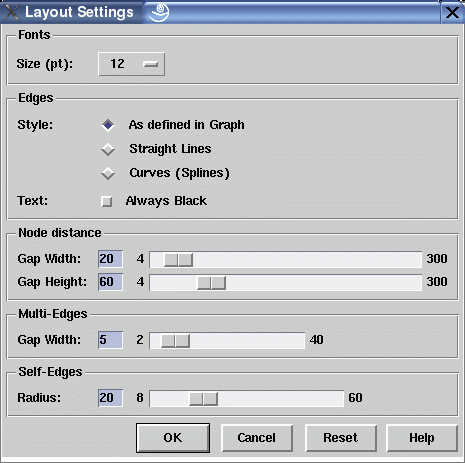

Layout Settings Dialog Window
This dialog window is used to control the settings and dimensions of a graph visualization. Modifying the dimensions has an influence on the extension of a graph visualization, so if you do not want to reduce the scale of a graph with dialog View/Scale... then you can reduce the font size or the node distances here to get a smaller visualization.
After changing the dimensions, the graph layout has to be recalculated to deal with new node extensions, but the order of nodes is preserved. This way all interactive fine-tuning operations performed on a graph layout will be lost afterwards. So be sure to set the final dimensions before starting with serious fine-tuning. By selecting a smaller or larger font size, the other dimensions in this window are adjusted proportionally.
The edge style, either straight lines or curves respective splines, can also be controlled here. This setting only affects long edges that span more than one horizontal node level. These long span edges are filled up with invisible dummy nodes at each passed level. Usually the segments of long span edges (starting at the parent, going from dummy to dummy and ending at the child node) are drawn with straight lines. An optional spline edge style can be used which looks much more pleasant. The style of an edge can be individually controlled with edge attribute EDGEPATTERN in the term representation of the graph. If not defined, straight lines are used as default. To overwrite the individual style settings, the global edge style can be set in this dialog window.
Note: when using splines, the dummy nodes are usually not laying on the spline curve. Instead, they are control points of the spline functions. So especially when there are sharp bends in the spline, the edge may overlap with neighbour nodes which is not the case when using straight lines.
Dialog Elements of the Layout Settings Window
-
Font Size (pt)
To set the font size in the visualization of a graph between 6 point and 34 point. Changing the font size with this option button will also adjust the other dimensions in this dialog window to keep the layout proportional. The font family and style cannot be selected interactively in uDraw(Graph). This is determined by the node attributes in the term representation of a graph. -
Edge Style
To choose whether long span edges are drawn as straight lines or as curves (splines). When using "As defined in Graph", the actual style of each individual edge is determined by the value of its EDGEPATTERN attribute in the term representation. When not defined, straight lines are assumed as default. These individual settings can be globally overwritten by using either the "Straight Lines" or "Curves (Splines)" setting. -
Edge Text
Specifies if the edge text should be always displayed in black or in grey if the edge is unselected and only in black if the edge is selected. Setting this option can lead to an unreadable layout of the graph, because edge texts can cross nodes and other edges or other edge texts. -
Node Distance Gap Width
To set the minimal horizontal distance between nodes at the levels (vertical distance for left-to-right and right-to-left orientations). -
Node Distance Gap Height
To set the minimal vertical distance between the levels (horizontal distance for left-to-right and right-to-left orientations). -
Multi-Edge Gap Width
To set the gap between individual edges of a multi-edge. -
Self-Edge Radius
To set the radius which is used for drawing self-edge. -
Ok
Push button to accept the current settings of this dialog window. Without pressing this button, modifications to these options are not considered. -
Cancel
Push button to close the layout settings dialog window without performing any action. -
Reset
Push button to undo any modification to these options which were not confirmed using the "Ok" push button yet. So reset goes back to the current settings. -
Help
Push button to start the online help system with this page.